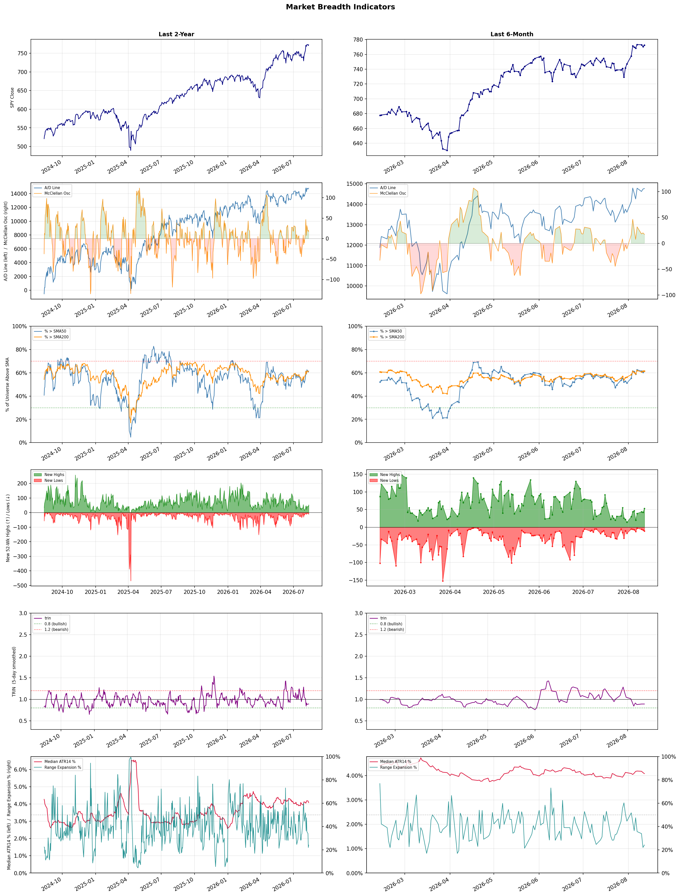

A daily market breadth and sector rotation report for active investors
| Item | Read |
|---|---|
| Regime | Risk-On |
| Risk posture | Selective |
| Universe | 1,334 stocks tracked · 53 new 52-week highs · 30 active swing setups |
| Breadth | 61.4% of tracked stocks are above SMA50, new highs exceed new lows (53 vs 11) |
| Leadership | Diagnostics & Research, Medical Devices, and Software - Application |
| Weakest groups | Solar, Chemicals, and Footwear & Accessories |
Use this report to prioritize research and chart review; validate entries, stops, liquidity, earnings, and risk before acting.
| Item | Read |
|---|---|
| Primary read | Risk-On regime with Selective risk posture. |
| Research queue | TWST, WGS, ADPT, IQV, OPK |
| Leadership focus | Diagnostics & Research, Medical Devices, and Software - Application |
| Caution list | Solar, Chemicals, and Footwear & Accessories |
| Review prompt | Check extension risk, chart location, fundamentals, valuation, and earnings before using any research row. |
| Item | Read |
|---|---|
| Primary read | 1 active risk warnings; use screen output as watchlist input only. |
| Bullish screens | DXCM, MPC, PSX, VLO, ANET |
| Bearish screens | LZ, APP, NKE |
| Alerts / levels | Automated trigger, stop, ATR, liquidity, reward/risk, and event-risk levels are pending future enrichment. |
| Review prompt | Open the linked chart, define trigger and invalidation, then check liquidity and event risk independently. |
Risk Posture: Selective — screen backdrop supports selective research in leading industries
Metric context: McClellan below -50 = elevated selling pressure; below -100 = washout territory. Range Expansion = share of stocks with daily range above their 20-day average. Signal Density = share of tracked names appearing in signal screens.
| Breadth Date | % > SMA50 | % > SMA200 | New Highs | New Lows | McClellan | Median Range | Avg Range | Median ATR14 | Range Expansion | Signal Density |
|---|---|---|---|---|---|---|---|---|---|---|
| 2026-08-12 | 61.4% | 61.6% | 53 | 11 | 17.4 | 2.9% | 3.6% | 4.1% | 24.1% | 6.9% |

Prior comparison date: August 11, 2026
| Metric | Prior | Current | Change |
|---|---|---|---|
| Regime | Risk-On | Risk-On | unchanged |
| Risk Posture | Selective | Selective | unchanged |
| % > SMA50 | 61.1% | 61.4% | +0.3 pts |
| % > SMA200 | 62.6% | 61.6% | -1.1 pts |
| New Highs | 53 | 53 | +0 |
| New Lows | 13 | 11 | +2 |
Top-10 industries entering: Computer Hardware, Insurance Brokers, and Software - Infrastructure. Top-10 industries leaving: Apparel Retail, Asset Management, and Travel Services. New multi-signal long setups: ANET, BNS, BNY, CGAU, ETN, EXPE, MPLX, NRIX. New multi-signal short setups: APP, NKE.
| Status | Tickers | Read |
|---|---|---|
| Added | ANET, APP, APPS, BNS, BNY, CGAU, ETN, EXPE | New technical screen matches vs prior report. |
| Removed | ABCL, ABNB, ACAD, AMPL, BAK, BMRN, EMR, FAST | No longer present in today's technical screen matches. |
| Still Active | AEHR, ASB, BAC, DXCM, ET, FSLY, LZ, MPC | Appeared in both current and prior reports. |
| Promoted | P | Model Screen Score improved by at least 15 points. |
| Downgraded | FSLY | Model Screen Score declined by at least 15 points. |
| Direction | Industry | ETF | Prior Rank | Current Rank | Days | Rank Change |
|---|---|---|---|---|---|---|
| Rose | Copper | COPX | 87 | 8 | 35 | +79 |
| Rose | Gold | GDX | 87 | 19 | 42 | +68 |
| Rose | Oil & Gas Integrated | XLE | 83 | 21 | 42 | +62 |
| Rose | Oil & Gas E&P | XOP | 84 | 23 | 42 | +61 |
| Rose | Computer Hardware | XLK | 65 | 6 | 14 | +59 |
Bull: Copper is experiencing a rising relative strength primarily due to its critical role in the electrification and AI sectors, as highlighted by headlines discussing COPX as a key player in the "electrification squeeze" and the "pick-and-shovel AI trade." The recent surge in demand for copper, driven by the transition to renewable energy and increased infrastructure spending, positions it as a vital commodity akin to crude oil, further supported by reports of significant gains in copper mining stocks. This momentum is likely to continue as Wall Street recognizes copper's essential role in emerging technologies and sustainable energy solutions.
Bear: While the current narrative around copper's role in electrification and AI is compelling, it overlooks potential headwinds such as the cyclical nature of commodity markets and the risk of oversupply as new mining projects come online. Additionally, geopolitical tensions and trade policies could disrupt supply chains, leading to price volatility that might undermine the bullish outlook for copper ETFs like COPX. Furthermore, the excitement surrounding copper could be overblown if alternative materials or technologies emerge that reduce dependence on copper in key applications.
Verdict: Copper's rising demand is fundamentally driven by its critical role in electrification and renewable energy initiatives, positioning it as an essential commodity in the transition to sustainable technologies. However, investors should remain cautious of potential oversupply risks and geopolitical disruptions that could lead to price volatility, which may impact the bullish sentiment surrounding copper ETFs like COPX. It is advisable to monitor supply chain developments and alternative material advancements closely.
Sources: Yahoo Finance, Google News
Bull: Gold is experiencing a rise in relative strength primarily due to increasing investor interest in safe-haven assets amid economic uncertainty, as indicated by the headline "Gold prices are breaking higher after a tough stretch." Additionally, the strong performance of gold miners, as evidenced by the drop in the DUST ETF and the rally in gold stocks, suggests a positive sentiment towards the sector, further driving demand for gold-related investments like GDX. The rotation in the gold sector, highlighted by Barrick's stock valuation reset, indicates a broader market shift favoring gold over more volatile sectors, reinforcing its appeal.
Bear: While the current rise in gold prices and the performance of gold miners may suggest a bullish outlook, it is essential to consider that this trend could be driven more by short-term speculative trading rather than sustained fundamental demand. The increasing interest in safe-haven assets may also reflect broader economic fears, which could lead to volatility and uncertainty in the gold market. Additionally, the potential for rising interest rates and a strengthening dollar could undermine gold's appeal, making investments in gold ETFs like GDX riskier in the long run.
Verdict: The rising trend in gold prices is fundamentally driven by heightened investor interest in safe-haven assets amid economic uncertainty, as evidenced by the strong performance of gold miners and ETFs like GDX. However, a key risk to this bullish outlook is the potential for rising interest rates and a strengthening dollar, which could diminish gold's attractiveness and lead to increased market volatility. Investors should closely monitor economic indicators and central bank policies to gauge the sustainability of this trend.
Sources: Yahoo Finance, Google News
Bull: The Oil & Gas Integrated sector is experiencing rising relative strength primarily due to increasing fair value estimates for major oil stocks, driven by higher oil prices, as highlighted by Morningstar. Additionally, the positive sentiment reflected in multiple headlines, such as "5 Best Energy Stocks for 2026" and "7 Best Oil and Gas Stocks to Buy in 2026," indicates strong analyst confidence and potential for growth in the sector, further bolstering investor interest and market performance.
Bear: While rising oil prices and increasing fair value estimates may suggest short-term optimism, the long-term outlook for the Oil & Gas Integrated sector remains precarious due to persistent geopolitical risks, regulatory pressures on fossil fuels, and the accelerating shift towards renewable energy sources. Furthermore, the mixed performance of energy stocks, as indicated by recent headlines, signals underlying volatility and uncertainty, which could undermine sustained investor confidence and lead to potential corrections in the sector.
Verdict: The Oil & Gas Integrated sector's rising relative strength is fundamentally driven by increasing oil prices and heightened fair value estimates for major stocks, reflecting strong analyst confidence and investor interest. However, key risks remain, particularly from geopolitical tensions and regulatory pressures on fossil fuels, which could hinder long-term growth and lead to volatility in stock performance. Investors should remain cautious and consider diversifying into renewable energy assets to mitigate potential downturns.
Sources: Yahoo Finance, Google News
Bull: The rising relative strength of the Oil & Gas Exploration and Production (E&P) sector, as represented by the XOP ETF, is primarily driven by the recent surge in oil prices, which have topped $100 for the first time since May, indicating strong demand and tight supply conditions. Additionally, the headlines highlight the outperformance of specific E&P companies like Antero Resources and Magnolia Oil & Gas, suggesting that these firms are capitalizing on favorable market dynamics, further bolstering investor confidence in the sector as it outperforms other industries. This combination of high oil prices and strong individual company performance positions the E&P sector favorably for continued growth.
Bear: While the recent surge in oil prices above $100 may seem promising, it is crucial to consider the broader economic context, including potential demand destruction due to high prices, ongoing geopolitical risks, and the looming threat of recession. Additionally, the XOP ETF's limited holdings and concentration in a few high-performing companies may not provide a sustainable growth trajectory for the entire sector, as many E&P firms face rising operational costs, regulatory pressures, and an increasing focus on renewable energy investments that could undermine long-term profitability.
Verdict: The Oil & Gas E&P sector's rise, as indicated by the XOP ETF, is fundamentally driven by a surge in oil prices surpassing $100, reflecting strong demand amid tight supply conditions and the outperformance of select companies like Antero Resources and Magnolia Oil & Gas. However, investors should remain cautious of the key risks highlighted by the bear thesis, including potential demand destruction from high prices, geopolitical uncertainties, and the looming threat of recession, which could undermine the sector's growth prospects.
Sources: Yahoo Finance, Google News
Bull: The rising relative strength of the Computer Hardware sector can be attributed to positive sentiment surrounding technology stocks, as indicated by recent headlines highlighting gains in tech equities and favorable consumer inflation data, which bolster investor confidence. Additionally, the increasing focus on emerging technologies such as AI and quantum computing, as noted in articles discussing the best stocks in these areas, suggests a robust growth outlook for companies within the Computer Hardware industry, driving demand and investment.
Bear: While the recent headlines may suggest a positive sentiment in the Computer Hardware sector, they fail to address the underlying challenges that could hinder sustainable growth. The rising relative strength may be more a reflection of short-term trading momentum rather than fundamental improvements, as many tech stocks are still grappling with supply chain issues, inflationary pressures, and potential regulatory headwinds. Moreover, the hype surrounding emerging technologies like AI and quantum computing could lead to inflated valuations, creating a risk of significant corrections if these innovations do not materialize as expected.
Verdict: The Computer Hardware sector's rising strength is primarily driven by positive sentiment fueled by favorable economic indicators and heightened interest in emerging technologies like AI and quantum computing, which are expected to enhance demand for hardware solutions. However, investors should remain cautious of the significant risks posed by ongoing supply chain challenges, inflationary pressures, and the potential for overvaluation in a market that may be overly reliant on speculative trends.
Sources: Yahoo Finance, Google News
| Direction | Industry | ETF | Prior Rank | Current Rank | Days | Rank Change |
|---|---|---|---|---|---|---|
| Fell | REIT - Healthcare Facilities | XLRE | 5 | 74 | 14 | -69 |
| Fell | Healthcare Plans | IHF | 1 | 67 | 42 | -66 |
| Fell | Gambling | N/A | 13 | 79 | 35 | -66 |
| Fell | REIT - Retail | N/A | 8 | 70 | 14 | -62 |
| Fell | Beverages - Non-Alcoholic | XLP | 22 | 80 | 35 | -58 |
Bear: While the bull analyst attributes the decline in healthcare REITs to broader market trends and capital rotation, it's crucial to recognize that the healthcare sector faces unique headwinds that extend beyond general market sentiment. Increasing operational costs, regulatory pressures, and potential reimbursement rate cuts from government programs could significantly impact profitability, making healthcare REITs less attractive to investors even in a stable interest rate environment. Furthermore, the recent drop in American Healthcare REIT's stock price indicates specific concerns about the sector's fundamentals, which could suggest a more profound underlying weakness rather than merely a reaction to financial stocks' performance.
Bull: The recent decline in the relative strength of the Healthcare Facilities REIT sector can be attributed to broader market trends, particularly the rise of financial stocks, as indicated by the sector updates highlighting their performance. This shift in investor focus may lead to capital rotation away from healthcare REITs, which are perceived as less attractive in a rising interest rate environment that typically benefits financials. Additionally, the negative sentiment reflected in headlines like "American Healthcare REIT Drops 5.2% Amid Sector-Wide Selling" suggests that sector-wide selling pressures are exacerbating the relative weakness of healthcare REITs compared to other industries.
Verdict: The recent decline in the Healthcare Facilities REIT sector is primarily driven by unique industry challenges, including rising operational costs, regulatory pressures, and potential reimbursement cuts, which threaten profitability and investor confidence. While broader market trends and capital rotation towards financial stocks have contributed to the sector's weakness, the key risk lies in the potential for these fundamental issues to persist, making healthcare REITs less appealing even in a stable interest rate environment. Investors should closely monitor regulatory developments and operational performance metrics to assess the sustainability of these REITs moving forward.
Sources: Yahoo Finance, Google News
Bear: While the bull analyst attributes the sector's relative weakness to profit-taking, the broader context reveals deeper issues, including rising regulatory pressures and potential changes in reimbursement models that could significantly impact profitability. Additionally, the mixed earnings reports from Q2 indicate that the defensive nature of the sector may not be enough to shield it from ongoing economic uncertainties and competitive pressures, suggesting that the current decline in relative strength could be a sign of more systemic challenges rather than a mere temporary pullback.
Bull: The relative weakness in the Healthcare Plans sector, as indicated by the falling trend compared to other industries, can be attributed to recent profit-taking following strong performances, particularly in stocks like UnitedHealth, which recently pulled back after reaching a 52-week high. Additionally, mixed earnings reports in Q2, as highlighted by Morningstar, suggest that while the sector remains defensive and innovative, uncertainties regarding regulatory changes and market dynamics may be causing investors to reassess their positions, leading to a temporary decline in relative strength.
Verdict: The Healthcare Plans sector's recent decline appears driven by profit-taking after strong performances, particularly in leading stocks like UnitedHealth, alongside mixed Q2 earnings reports that have raised concerns about regulatory changes and market dynamics. However, the key risk lies in the potential for rising regulatory pressures and shifts in reimbursement models, which could pose significant challenges to profitability and indicate deeper systemic issues within the sector. Investors should closely monitor these regulatory developments and consider adjusting their positions accordingly.
Sources: Yahoo Finance, Google News
Bear: While the bull analyst acknowledges the rising taxation and regulatory pressures, they underestimate the long-term impact of these factors on profitability and growth potential within the gambling industry. Additionally, macroeconomic concerns such as inflation and potential recessions are likely to lead to reduced discretionary spending, which directly affects consumer spending on gambling. This combination of escalating costs and declining consumer confidence creates a precarious environment for the sector, making it difficult for any individual stock to thrive amidst broader industry headwinds.
Bull: The Gambling industry is experiencing a decline in relative strength primarily due to rising taxation and regulatory pressures, as highlighted by the article from The Guardian discussing tax increases for the sector. Additionally, macroeconomic concerns, such as inflation and potential economic slowdowns, may be causing investors to be cautious, despite positive sentiment around specific stocks, as seen in the Motley Fool's focus on the best casino stocks for 2026. These factors contribute to a challenging environment for the industry, even as analysts remain optimistic about select gaming stocks.
Verdict: The gambling industry's decline is fundamentally driven by rising taxation and regulatory pressures, which are eroding profitability, coupled with macroeconomic challenges that dampen consumer discretionary spending. The key risk from the bear case is that sustained inflation and economic slowdowns could significantly reduce consumer confidence and spending on gambling, making it increasingly difficult for individual stocks to perform well in this challenging environment. Investors should remain cautious and consider reallocating resources to sectors less impacted by these headwinds.
Sources: Google News
Bear: While the bull analyst highlights pockets of opportunity within the Retail REIT sector, the broader economic landscape suggests significant headwinds that cannot be ignored. Rising interest rates are likely to increase borrowing costs for both consumers and retailers, potentially leading to reduced consumer spending and foot traffic, which could further exacerbate the already falling relative strength trend in the sector. Additionally, the focus on leasing strength may mask the underlying issues of declining foot traffic and changing consumer preferences towards e-commerce, which could undermine the long-term viability of traditional retail spaces.
Bull: The relative weakness of the Retail REIT sector can be attributed to broader market concerns regarding consumer spending and economic uncertainty, as highlighted by the focus on how to invest in REITs in 2026 and the analysis of supermarket income REITs, which suggests a cautious outlook on retail performance. Additionally, the emphasis on leasing strength and low supply in the recent headlines indicates that while there may be pockets of opportunity, the overall sentiment may be tempered by rising interest rates and inflation pressures affecting consumer behavior and retail foot traffic.
Verdict: The Retail REIT sector is experiencing a decline primarily due to rising interest rates and inflation, which are dampening consumer spending and foot traffic, thereby straining traditional retail spaces. While there may be isolated opportunities driven by leasing strength, the key risk lies in the potential for sustained reduced consumer engagement and the shift towards e-commerce, which could undermine the long-term viability of retail properties. Investors should approach Retail REITs with caution, focusing on those with strong fundamentals and adaptive strategies to navigate these challenges.
Sources: Google News
Bear: While the bull analyst suggests a potential recovery for the non-alcoholic beverage sector, the persistent decline in relative strength and the mixed performance of consumer stocks indicate deeper underlying issues, such as changing consumer preferences and increasing competition from both alcoholic and health-oriented beverage alternatives. Furthermore, the focus on premiumization in the alcohol sector may not only divert investor attention but also suggest that consumers are willing to spend more on premium alcoholic options, potentially limiting growth for non-alcoholic beverages as they struggle to justify their own pricing amidst rising costs and stagnant demand.
Bull: The Beverages - Non-Alcoholic sector is likely experiencing a decline in relative strength due to mixed performance in broader consumer stocks, as highlighted by multiple sector updates indicating fluctuations in consumer sentiment and stock performance. Additionally, the focus on alcohol stocks battling cost pressures and the emphasis on premiumization may divert investor attention and capital away from non-alcoholic beverages, as seen in the headlines discussing alcohol stocks and their strategies. This context suggests that while the sector faces challenges, it may also present opportunities for recovery as consumer preferences shift back towards non-alcoholic options.
Verdict: The non-alcoholic beverage sector is experiencing a decline primarily due to shifting consumer preferences towards premium alcoholic options and health-oriented alternatives, which are capturing market share and investment interest. The key risk from the bear case lies in the inability of non-alcoholic beverages to justify their pricing amidst rising costs and stagnant demand, potentially leading to further erosion of market position and profitability. Investors should closely monitor consumer trends and competitive dynamics to identify potential recovery signals or continued declines in this sector.
Sources: Yahoo Finance, Google News
| Industry | Rank | ETF | 7d | 14d | 28d | 42d | Chg 42d | Size | 20D | 60D | Composite | Active Setups |
|---|---|---|---|---|---|---|---|---|---|---|---|---|
| Diagnostics & Research | 1 | N/A | 1 | 12 | 2 | 3 | +2 | 16 | 10.8% | 61.5% | 0.954 | 1 |
| Medical Devices | 2 | N/A | 21 | 19 | 27 | 35 | +33 | 20 | 11.6% | 28.3% | 0.870 | 1 |
| Software - Application | 3 | IGV | 8 | 21 | 19 | 61 | +58 | 74 | 12.0% | 24.8% | 0.859 | 1 |
| Health Information Services | 4 | N/A | 22 | 14 | 3 | 10 | +6 | 12 | 7.0% | 44.2% | 0.854 | 0 |
| Oil & Gas Refining & Marketing | 5 | CRAK | 2 | 1 | 1 | 54 | +49 | 7 | 6.8% | 22.8% | 0.847 | 0 |
| Computer Hardware | 6 | XLK | 43 | 65 | 49 | 37 | +31 | 15 | 21.4% | 24.5% | 0.817 | 1 |
| Software - Infrastructure | 7 | IGV | 18 | 47 | 14 | 27 | +20 | 62 | 8.2% | 21.4% | 0.810 | 1 |
| Copper | 8 | COPX | 14 | 71 | 83 | 80 | +72 | 6 | 22.0% | 9.8% | 0.809 | 0 |
| Insurance Brokers | 9 | N/A | 24 | 2 | 23 | 32 | +23 | 6 | 6.0% | 22.2% | 0.800 | 0 |
| Medical Instruments & Supplies | 10 | N/A | 7 | 6 | 22 | 28 | +18 | 13 | 7.8% | 27.7% | 0.784 | 0 |
Rank columns (7d–42d) show the industry's rank that many trading days ago — lower is stronger. Chg 42d = rank change vs 42 trading days ago — positive means the industry moved up. 20D and 60D are the mean stock return within the industry over that period. Active Setups: count of today's swing-trade candidates from this industry appearing across all signal screens.
| Industry | Rank | ETF | 7d | 14d | 28d | 42d | Chg 42d | Size | 20D | 60D | Composite | Active Setups |
|---|---|---|---|---|---|---|---|---|---|---|---|---|
| Solar | 88 | TAN | 85 | 85 | 57 | 57 | -31 | 8 | -14.9% | -24.1% | 0.079 | 0 |
| Chemicals | 87 | N/A | 88 | 75 | 84 | 86 | -1 | 8 | -8.6% | -27.7% | 0.084 | 0 |
| Footwear & Accessories | 86 | N/A | 69 | 33 | 44 | 47 | -39 | 5 | -10.6% | 5.5% | 0.149 | 0 |
| Utilities - Independent Power Producers | 85 | XLU | 87 | 82 | 71 | 79 | -6 | 5 | -5.3% | -4.9% | 0.173 | 0 |
| Agricultural Inputs | 84 | N/A | 68 | 42 | 43 | 82 | -2 | 5 | -3.7% | -6.3% | 0.221 | 1 |
| Integrated Freight & Logistics | 83 | N/A | 73 | 57 | 35 | 26 | -57 | 7 | -7.2% | 0.1% | 0.231 | 0 |
| REIT - Diversified | 82 | N/A | 77 | 38 | 58 | 65 | -17 | 5 | -3.6% | -2.8% | 0.240 | 0 |
| Auto Manufacturers | 81 | N/A | 70 | 48 | 76 | 78 | -3 | 10 | -3.1% | -6.0% | 0.243 | 0 |
| Beverages - Non-Alcoholic | 80 | XLP | 51 | 37 | 33 | 25 | -55 | 7 | -7.9% | -4.4% | 0.253 | 0 |
| Gambling | 79 | N/A | 84 | 36 | 28 | 31 | -48 | 5 | -9.6% | -0.5% | 0.254 | 0 |
Rank columns (7d–42d) show the industry's rank that many trading days ago — lower is stronger. Chg 42d = rank change vs 42 trading days ago — positive means the industry moved up. 20D and 60D are the mean stock return within the industry over that period. Active Setups: count of today's swing-trade candidates from this industry appearing across all signal screens.
These are research candidates from top-ranked stocks, capped at five names per industry to avoid over-concentration. Returns shown (60D, 120D, 250D) are historical — they reflect where prices have already moved, not forward expectations. Extension Risk flags names that may require extra patience or a better entry point. They are not buy signals.
Chart: TV = TradingView chart (opens in browser); PDF = local chart file (if downloaded).
| Ticker | Name | Industry | Industry Rank | Market Cap | 60D Hist | 120D Hist | 250D Hist | Extension Risk | Research Reason | Chart |
|---|---|---|---|---|---|---|---|---|---|---|
| TWST | Twist Bioscience | Diagnostics & Research | 1 | N/A | 154.6% | 138.5% | 337.0% | Very extended | Top-ranked in industry; very extended | TV |
| WGS | GeneDx Holdings | Diagnostics & Research | 1 | N/A | 102.2% | -9.1% | -33.1% | Very extended | Top-ranked in industry; very extended | TV |
| ADPT | Adaptive Biotechnologies | Diagnostics & Research | 1 | N/A | 92.3% | 59.9% | 107.8% | Extended | Top-ranked in industry; extended | TV |
| IQV | IQVIA Holdings | Diagnostics & Research | 1 | N/A | 42.9% | 42.7% | 27.1% | Constructive | Top-ranked in industry | TV |
| OPK | Opko Health | Diagnostics & Research | 1 | N/A | 26.4% | 14.9% | 3.0% | Constructive | Top-ranked in industry | TV |
| BFLY | Butterfly Network | Medical Devices | 2 | N/A | 146.7% | 208.8% | 565.5% | Very extended | Top-ranked in industry; very extended | TV |
| TNDM | Tandem Diabetes Care | Medical Devices | 2 | N/A | 59.6% | 23.7% | 108.7% | Extended | Top-ranked in industry; extended | TV |
| DXCM | DexCom | Medical Devices | 2 | N/A | 47.3% | 25.6% | 13.6% | Constructive | Top-ranked in industry | TV |
| GKOS | Glaukos | Medical Devices | 2 | N/A | 36.9% | 70.5% | 120.5% | Constructive | Top-ranked in industry | TV |
| ABT | Abbott Laboratories | Medical Devices | 2 | N/A | 32.2% | 0.2% | -12.3% | Constructive | Top-ranked in industry | TV |
| NIQ | NIQ Global Intelligence | Software - Application | 3 | N/A | 105.0% | 46.6% | -8.2% | Very extended | Top-ranked in industry; very extended | TV |
| CHYM | Chime Financial | Software - Application | 3 | N/A | 78.6% | 53.2% | 5.3% | Extended | Top-ranked in industry; extended | TV |
| TEAM | Atlassian | Software - Application | 3 | N/A | 77.5% | 93.4% | -5.3% | Extended | Top-ranked in industry; extended | TV |
| FSLY | Fastly | Software - Application | 3 | N/A | 67.8% | 57.9% | 294.1% | Extended | Top-ranked in industry; extended | TV |
| RNG | RingCentral | Software - Application | 3 | N/A | 53.7% | 115.1% | 110.5% | Extended | Top-ranked in industry; extended | TV |
| TXG | 10x Genomics | Health Information Services | 4 | N/A | 172.4% | 200.9% | 325.6% | Very extended | Top-ranked in industry; very extended | TV |
| CERT | Certara | Health Information Services | 4 | N/A | 78.8% | 20.5% | -28.3% | Extended | Top-ranked in industry; extended | TV |
| VEEV | Veeva Systems | Health Information Services | 4 | N/A | 54.6% | 33.2% | -12.3% | Extended | Top-ranked in industry; extended | TV |
| GDRX | GoodRx | Health Information Services | 4 | N/A | 37.5% | 61.7% | 3.2% | Constructive | Top-ranked in industry | TV |
| HTFL | Heartflow | Health Information Services | 4 | N/A | -7.4% | 26.1% | -0.2% | Lagging | Top-ranked in industry; lagging | TV |
These are technical screen matches from existing signal files. They are not trade recommendations. Trigger, stop, ATR, liquidity, reward/risk, and event risk still require separate validation until those inputs are available.
Model Screen Score is weighted by signal count, industry rank, freshness, and setup type. It is not a probability of profit, expected return, or suitability rating. Industry cap: max 3 candidates per industry.
Signal glossary: Momentum Pullback = stock in an uptrend that has pulled back 10–30% and shows re-entry conditions. MA Compression = short- and long-term moving averages converging, often preceding a directional move. Three-Day Up/Down = three consecutive closes in the same direction. New 52Wk High/Low = price reached a new annual extreme.
Chart: TV = TradingView chart (opens in browser); PDF = local chart file (if downloaded).
| Ticker | Industry | Setups | Close | Industry Rank | Signal Count | Model Screen Score | Reason | Chart |
|---|---|---|---|---|---|---|---|---|
| DXCM | Medical Devices | New 52Wk High; Three-Day Up | 90.80 | 2 | 2 | 100 | Multi-signal; top industry breakout | TV |
| MPC | Oil & Gas Refining & Marketing | New 52Wk High; Three-Day Up | 348.25 | 5 | 2 | 93 | Multi-signal; top industry breakout | TV |
| PSX | Oil & Gas Refining & Marketing | New 52Wk High; Three-Day Up | 225.58 | 5 | 2 | 93 | Multi-signal; top industry breakout | TV |
| VLO | Oil & Gas Refining & Marketing | New 52Wk High; Three-Day Up | 330.21 | 5 | 2 | 93 | Multi-signal; top industry breakout | TV |
| ANET | Computer Hardware | New 52Wk High; Three-Day Up | 210.50 | 6 | 2 | 93 | Multi-signal; top industry breakout | TV |
| P | Computer Hardware | New 52Wk High; Three-Day Up | 111.40 | 6 | 2 | 93 | Multi-signal; top industry breakout | TV |
| RJF | Asset Management | New 52Wk High; Three-Day Up | 181.18 | 12 | 2 | 85 | Multi-signal; new-high strength | TV |
| STT | Asset Management | New 52Wk High; Three-Day Up | 190.11 | 12 | 2 | 85 | Multi-signal; new-high strength | TV |
| BAC | Banks - Diversified | New 52Wk High; Three-Day Up | 64.81 | 13 | 2 | 85 | Multi-signal; new-high strength | TV |
| BNS | Banks - Diversified | New 52Wk High; Three-Day Up | 90.33 | 13 | 2 | 85 | Multi-signal; new-high strength | TV |
| BNY | Banks - Diversified | New 52Wk High; Three-Day Up | 162.93 | 13 | 2 | 85 | Multi-signal; new-high strength | TV |
| NRIX | Biotechnology | New 52Wk High; Three-Day Up | 26.63 | 14 | 2 | 85 | Multi-signal; new-high strength | TV |
| EXPE | Travel Services | New 52Wk High; Three-Day Up | 325.57 | 15 | 2 | 85 | Multi-signal; new-high strength | TV |
| CGAU | Gold | New 52Wk High; Three-Day Up | 21.74 | 19 | 2 | 77 | Multi-signal; new-high strength | TV |
| TEVA | Drug Manufacturers - Specialty & Generic | New 52Wk High; Three-Day Up | 36.74 | 25 | 2 | 77 | Multi-signal; new-high strength | TV |
| AEHR | Semiconductor Equipment & Materials | New 52Wk High; Three-Day Up | 129.23 | 31 | 2 | 70 | Multi-signal; new-high strength | TV |
| ASB | Banks - Regional | New 52Wk High; Three-Day Up | 32.13 | 37 | 2 | 70 | Multi-signal; new-high strength | TV |
| PNC | Banks - Regional | New 52Wk High; Three-Day Up | 255.46 | 37 | 2 | 70 | Multi-signal; new-high strength | TV |
| ET | Oil & Gas Midstream | New 52Wk High; Three-Day Up | 20.95 | 40 | 2 | 70 | Multi-signal; new-high strength | TV |
| MPLX | Oil & Gas Midstream | New 52Wk High; Three-Day Up | 59.94 | 40 | 2 | 70 | Multi-signal; new-high strength | TV |
| ETN | Specialty Industrial Machinery | New 52Wk High; Three-Day Up | 459.96 | 55 | 2 | 65 | Multi-signal; new-high strength | TV |
| PSNL | Diagnostics & Research | Momentum Pullback | 14.21 | 1 | 1 | 65 | Single-signal; top industry pullback | TV |
| NVCR | Medical Devices | Momentum Pullback | 17.59 | 2 | 1 | 65 | Single-signal; top industry pullback | TV |
| APPS | Software - Application | Momentum Pullback | 12.41 | 3 | 1 | 65 | Single-signal; top industry pullback | TV |
| FSLY | Software - Application | Momentum Pullback | 28.53 | 3 | 1 | 65 | Single-signal; top industry pullback | TV |
| GRND | Software - Application | Momentum Pullback | 15.87 | 3 | 1 | 65 | Single-signal; top industry pullback | TV |
| UMAC | Computer Hardware | Momentum Pullback | 27.03 | 6 | 1 | 58 | Single-signal; top industry pullback | TV |
Bearish setups — stocks making new lows or showing persistent downside patterns. Validate carefully before acting.
| Ticker | Industry | Setups | Close | Industry Rank | Signal Count | Model Screen Score | Reason | Chart |
|---|---|---|---|---|---|---|---|---|
| LZ | Specialty Business Services | New 52Wk Low; Three-Day Down | 5.43 | 18 | 2 | 47 | Multi-signal; new-low weakness | TV |
| APP | Advertising Agencies | New 52Wk Low; Three-Day Down | 303.76 | 36 | 2 | 40 | Multi-signal; new-low weakness | TV |
| NKE | Footwear & Accessories | New 52Wk Low; Three-Day Down | 40.51 | 86 | 2 | 15 | Multi-signal; new-low weakness | TV |
How To Use This Report
| Use | Purpose |
|---|---|
| Market map | Start with breadth, regime, risk warnings, and what changed since the prior report. |
| Industry scan | Use leading, deteriorating, rising, and declining industries to focus research. |
| Research queue | Treat long-term candidates as names for deeper fundamental, valuation, and chart review. |
| Technical review | Treat bullish and bearish screen matches as watchlist inputs that require independent trigger, stop, liquidity, and event-risk checks. |
| Source follow-up | Use chart links and source files to verify raw inputs before relying on any row. |
What This Report Is Not
| Not | Meaning |
|---|---|
| Investment advice | The report does not evaluate personal objectives, risk tolerance, tax situation, account type, or suitability. |
| Buy/sell recommendation | Named tickers are research candidates or screen matches, not recommendations to transact. |
| Price target | The report does not provide fair value estimates, targets, or expected returns. |
| Trade plan | Trigger, stop, sizing, reward/risk, liquidity, and event-risk review remain separate user work. |
| Performance claim | Model Screen Score is not validated historical performance or a forecast of future results. |
| Item | Note |
|---|---|
| Version | Daily Report Methodology v1 |
| Model Screen Score | Screen-fit rank based on signal count, industry rank, freshness, and setup type. |
| Not predictive proof | The score is not expected return, probability of profit, historical validation, or suitability analysis. |
| Industry ranks | Composite industry ranks use existing daily ranking outputs and historical rank columns when available. |
| Research candidates | Long-term rows are research candidates from ranked stocks and leading industries, with historical returns labeled as historical only. |
| Technical matches | Bullish and bearish rows are screen matches requiring independent chart, trigger, stop, liquidity, and event-risk review. |
| Source | Status | Rows | Path |
|---|---|---|---|
| Market breadth | present | 1253 | breadth_20260812.csv |
| Industry composite rankings | present | 88 | all_industry_composite_20260812.csv |
| Top ranked stocks | present | 231 | top_ranked_composite_20260812.csv |
| All ranked stocks | present | 1334 | all_stocks_composite_sorted_20260812.csv |
| Top momentum pullbacks | present | 1482 | top_momentum_pullbacks_20260812.csv |
| MA compression | present | 1482 | ma_compression_stocks_20260812.csv |
| Three-day up/down | present | 152 | three_day_up_down_stocks_20260812.csv |
| New 52-week members | present | 64 | breadth_new_52wk_members_20260812.csv |
This report is generated from automated technical screens and is for informational and research purposes only. It is not investment advice, a solicitation, or a recommendation to buy or sell any security. Past performance is not indicative of future results. You are solely responsible for your own investment decisions. Consult a licensed financial advisor before acting on any information herein.